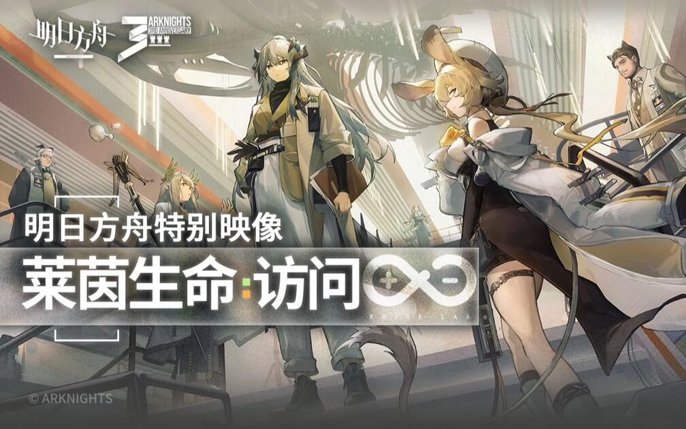
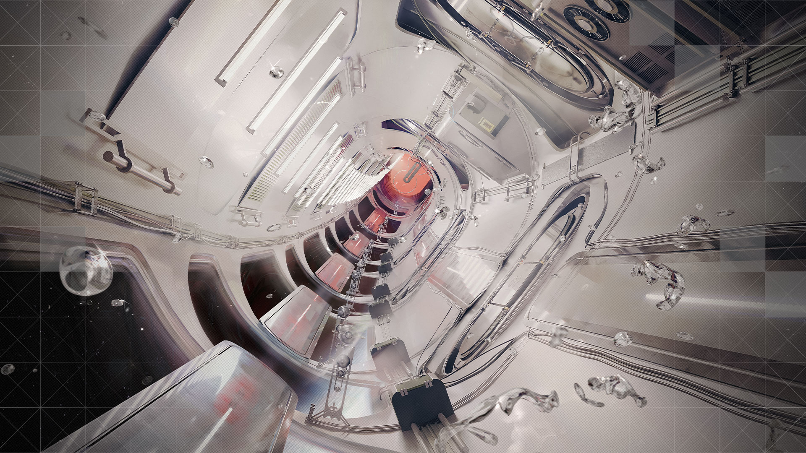

DEMONSTRATION RECORD / 本库教学内容
材料样本
用半透明外壳、编号与目录说明区分“容器”和“内容”。这里展示的是原创教学条目，不是游戏世界中的机密材料记录。
- 记录属性
- 构成实验
- 来源关系
- 影像视觉观察 → 网页交互改编
01 / OFFICIAL FILM → WEB ADAPTATION
官方影像的网页转译 / 教学改编
以《莱茵生命：访问》的米白档案阵列为视觉来源。这里的按钮、条目与阅读流程是本库设计实验。
DEMONSTRATION RECORD / 本库教学内容
用半透明外壳、编号与目录说明区分“容器”和“内容”。这里展示的是原创教学条目，不是游戏世界中的机密材料记录。
SELECTING FILES ● 本地演示
官方影像在约一分钟处展示不同科室的黑白缩写模块。大字承担识别，细字解释职责，橙色小方块标记焦点。

2022 / 明日方舟官方账号影像原作。许可确认、透明档案、科室缩写来自这段官方PV。

2023 / 官方四周年专题真实宣传网页。活动模块、预告入口和多色横线可与影像的研究机构语汇比较。
本案例没有把二创网站当作官方，也不声称存在一个对应的“莱茵生命官方品牌站”。本地内容为独立教学改编，固定浅米白主题，未搬运影片或原音轨。名称、媒体与影像视觉权利归原权利人。